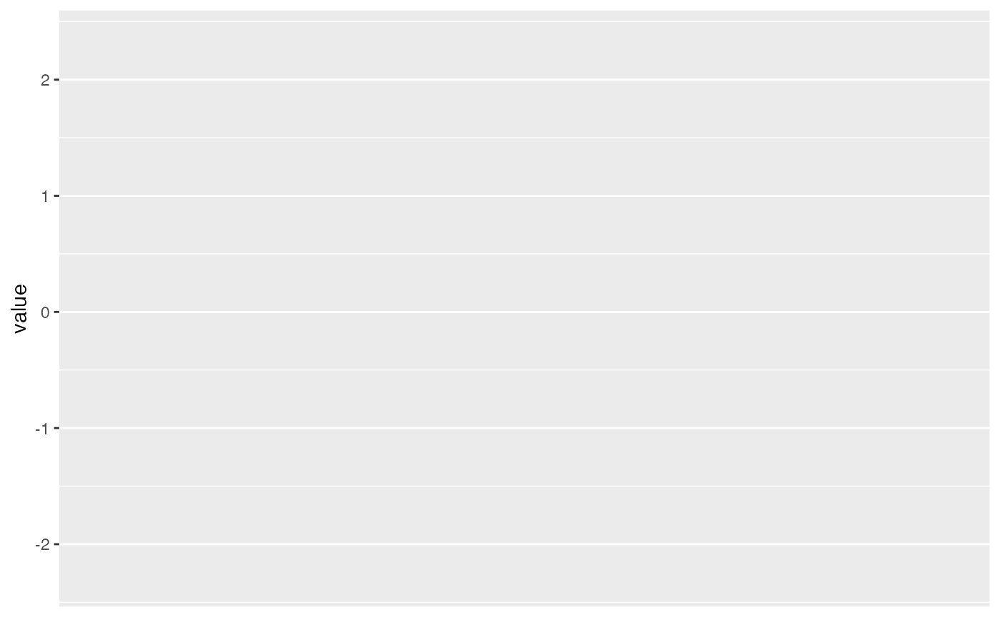
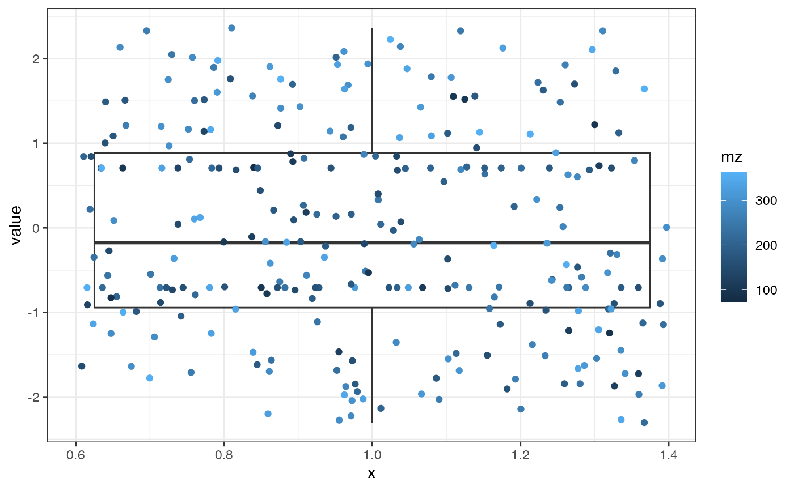
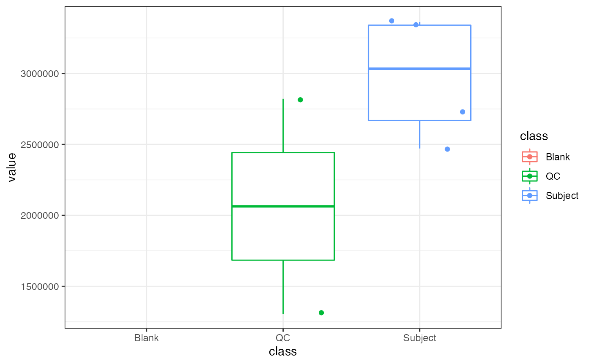
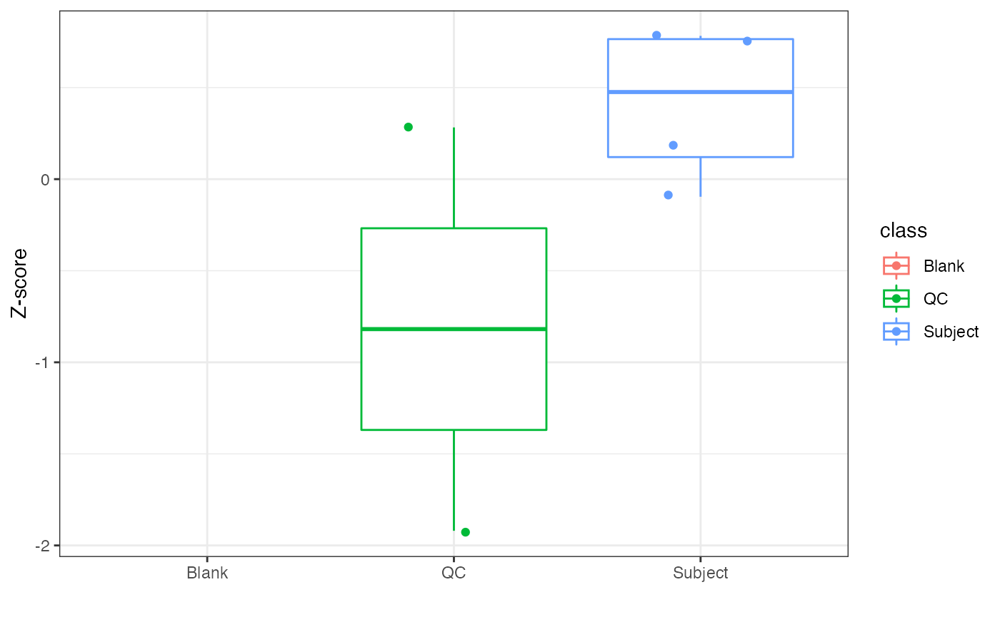
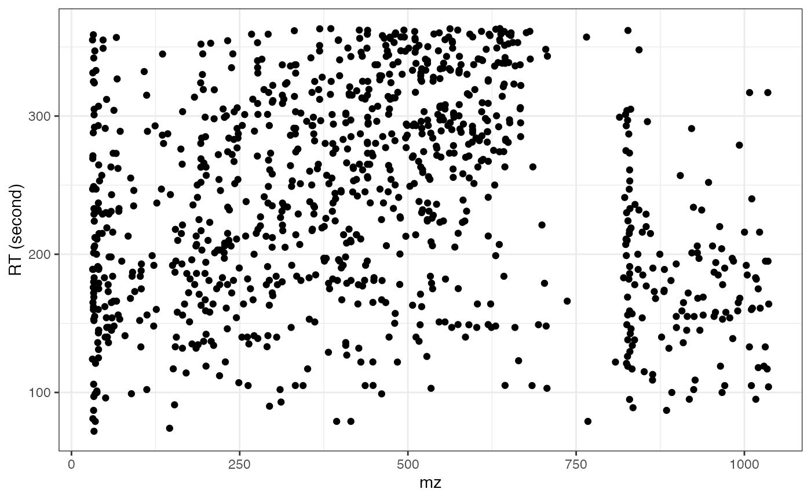

vignettes/ggplot_mass_dataset.Rmd
ggplot_mass_dataset.Rmdmass_dataset can be easily used with
ggplot2 package with ggplot_mass_dataset
function. Now, ggplot() function also supports
mass_dataset class.
library(massdataset)
library(tidyverse)
data("expression_data")
data("sample_info")
data("sample_info_note")
data("variable_info")
data("variable_info_note")
object =
create_mass_dataset(
expression_data = expression_data,
sample_info = sample_info,
variable_info = variable_info,
sample_info_note = sample_info_note,
variable_info_note = variable_info_note
)We need to replace ggplot with
ggplot_mass_dataset, and then other functions are same with
ggplot2 for graphics.
plot <-
object %>%
`+`(1) %>%
log(10) %>%
scale() %>%
ggplot_mass_dataset(direction = "sample",
sample_index = 2)
class(plot)
#> [1] "gg" "ggplot"The default y is value, here is the
intensity of all the features in the second sample.
plot
head(plot$data)
#> variable_id mz rt value
#> 1 M136T55_2_POS 136.06140 54.97902 NA
#> 2 M79T35_POS 79.05394 35.36550 NA
#> 3 M307T548_POS 307.14035 547.56641 NA
#> 4 M183T224_POS 183.06209 224.32777 NA
#> 5 M349T47_POS 349.01584 47.00262 NA
#> 6 M182T828_POS 181.99775 828.35712 -1.778405
plot <-
object %>%
`+`(1) %>%
log(10) %>%
scale() %>%
ggplot_mass_dataset(direction = "sample",
sample_index = 2) +
geom_boxplot(aes(x = 1)) +
geom_jitter(aes(x = 1, color = mz)) +
theme_bw()
plot
ggplot_mass_dataset(object, direction = "variable",
variable_index = 2) +
geom_boxplot(aes(x = class, color = class)) +
geom_jitter(aes(x = class, color = class)) +
theme_bw()
object %>%
`+`(1) %>%
log(10) %>%
scale() %>%
ggplot_mass_dataset(direction = "variable",
variable_index = 2) +
geom_boxplot(aes(x = class, color = class)) +
geom_jitter(aes(x = class, color = class)) +
theme_bw() +
labs(x = "", y = "Z-score")
ggplot() function
You need use activate_mass_dataset() to tell which slot
you want to use for ggplot().
object %>%
`+`(1) %>%
log(10) %>%
scale() %>%
activate_mass_dataset(what = "variable_info") %>%
ggplot(aes(rt, mz)) +
geom_point() +
theme_bw() +
labs(x = "mz", y = "RT (second)")
sessionInfo()
#> R version 4.1.2 (2021-11-01)
#> Platform: x86_64-apple-darwin17.0 (64-bit)
#> Running under: macOS Big Sur 10.16
#>
#> Matrix products: default
#> BLAS: /Library/Frameworks/R.framework/Versions/4.1/Resources/lib/libRblas.0.dylib
#> LAPACK: /Library/Frameworks/R.framework/Versions/4.1/Resources/lib/libRlapack.dylib
#>
#> locale:
#> [1] en_US.UTF-8/en_US.UTF-8/en_US.UTF-8/C/en_US.UTF-8/en_US.UTF-8
#>
#> attached base packages:
#> [1] stats graphics grDevices utils datasets methods base
#>
#> other attached packages:
#> [1] forcats_0.5.1 stringr_1.4.0 dplyr_1.0.7 purrr_0.3.4
#> [5] readr_2.0.0 tidyr_1.1.3 tibble_3.1.3 tidyverse_1.3.1
#> [9] ggplot2_3.3.5 magrittr_2.0.1 masstools_0.99.13 massdataset_1.0.5
#>
#> loaded via a namespace (and not attached):
#> [1] readxl_1.3.1 backports_1.2.1
#> [3] circlize_0.4.14 systemfonts_1.0.2
#> [5] plyr_1.8.6 lazyeval_0.2.2
#> [7] BiocParallel_1.26.1 GenomeInfoDb_1.28.1
#> [9] Rdisop_1.52.0 digest_0.6.27
#> [11] foreach_1.5.1 htmltools_0.5.2
#> [13] fansi_0.5.0 memoise_2.0.0
#> [15] cluster_2.1.2 doParallel_1.0.16
#> [17] tzdb_0.1.2 openxlsx_4.2.4
#> [19] limma_3.48.1 ComplexHeatmap_2.8.0
#> [21] modelr_0.1.8 matrixStats_0.60.0
#> [23] pkgdown_2.0.1 colorspace_2.0-2
#> [25] rvest_1.0.1 textshaping_0.3.6
#> [27] haven_2.4.1 xfun_0.31
#> [29] crayon_1.4.1 RCurl_1.98-1.3
#> [31] jsonlite_1.7.2 impute_1.66.0
#> [33] iterators_1.0.13 glue_1.4.2
#> [35] gtable_0.3.0 zlibbioc_1.38.0
#> [37] XVector_0.32.0 GetoptLong_1.0.5
#> [39] DelayedArray_0.18.0 shape_1.4.6
#> [41] BiocGenerics_0.38.0 scales_1.1.1
#> [43] vsn_3.60.0 DBI_1.1.1
#> [45] Rcpp_1.0.7 mzR_2.26.1
#> [47] viridisLite_0.4.0 clue_0.3-59
#> [49] gridGraphics_0.5-1 preprocessCore_1.54.0
#> [51] stats4_4.1.2 MsCoreUtils_1.4.0
#> [53] htmlwidgets_1.5.3 httr_1.4.2
#> [55] RColorBrewer_1.1-2 ellipsis_0.3.2
#> [57] farver_2.1.0 pkgconfig_2.0.3
#> [59] XML_3.99-0.6 sass_0.4.0
#> [61] dbplyr_2.1.1 utf8_1.2.2
#> [63] labeling_0.4.2 ggplotify_0.0.8
#> [65] tidyselect_1.1.1 rlang_0.4.11
#> [67] munsell_0.5.0 cellranger_1.1.0
#> [69] tools_4.1.2 cachem_1.0.5
#> [71] cli_3.0.1 generics_0.1.0
#> [73] broom_0.7.9 evaluate_0.14
#> [75] fastmap_1.1.0 mzID_1.30.0
#> [77] yaml_2.2.1 ragg_1.1.3
#> [79] knitr_1.33 fs_1.5.0
#> [81] zip_2.2.0 ncdf4_1.17
#> [83] pbapply_1.4-3 xml2_1.3.2
#> [85] compiler_4.1.2 rstudioapi_0.13
#> [87] plotly_4.9.4.1 png_0.1-7
#> [89] affyio_1.62.0 reprex_2.0.0
#> [91] bslib_0.3.1 stringi_1.7.3
#> [93] highr_0.9 desc_1.3.0
#> [95] MSnbase_2.18.0 lattice_0.20-45
#> [97] ProtGenerics_1.24.0 Matrix_1.3-4
#> [99] ggsci_2.9 vctrs_0.3.8
#> [101] pillar_1.6.2 lifecycle_1.0.0
#> [103] BiocManager_1.30.16 jquerylib_0.1.4
#> [105] MALDIquant_1.20 GlobalOptions_0.1.2
#> [107] data.table_1.14.0 bitops_1.0-7
#> [109] GenomicRanges_1.44.0 R6_2.5.0
#> [111] pcaMethods_1.84.0 affy_1.70.0
#> [113] IRanges_2.26.0 codetools_0.2-18
#> [115] MASS_7.3-54 assertthat_0.2.1
#> [117] SummarizedExperiment_1.22.0 rprojroot_2.0.2
#> [119] rjson_0.2.20 withr_2.4.2
#> [121] S4Vectors_0.30.0 GenomeInfoDbData_1.2.6
#> [123] parallel_4.1.2 hms_1.1.0
#> [125] grid_4.1.2 rmarkdown_2.14
#> [127] rvcheck_0.1.8 MatrixGenerics_1.4.2
#> [129] Cairo_1.5-12.2 Biobase_2.52.0
#> [131] lubridate_1.7.10